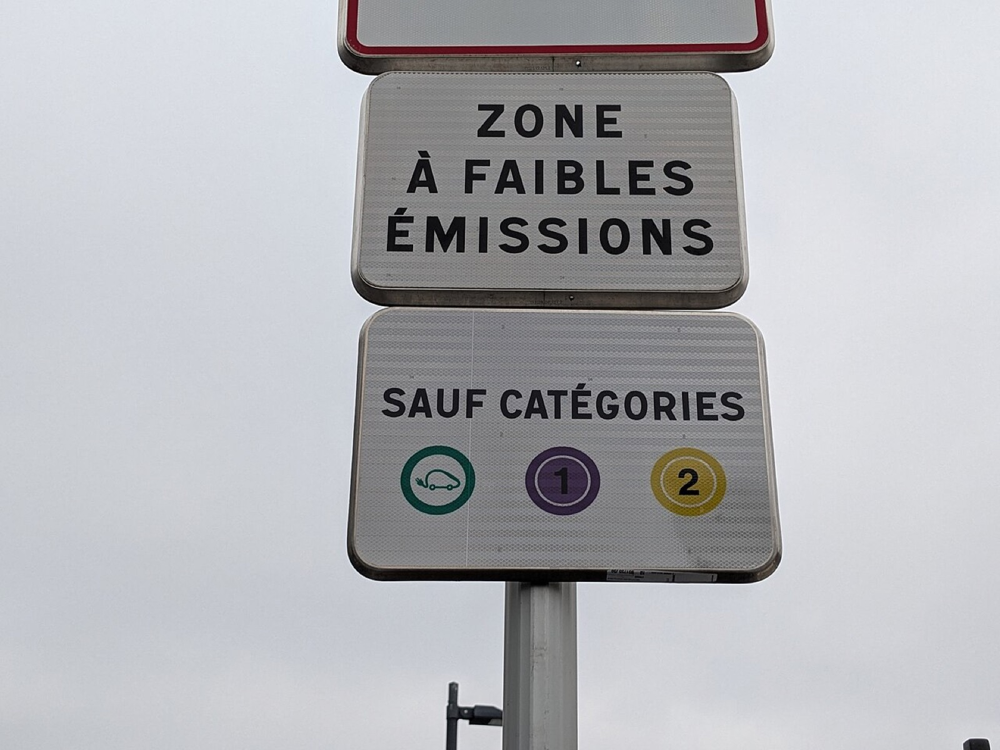
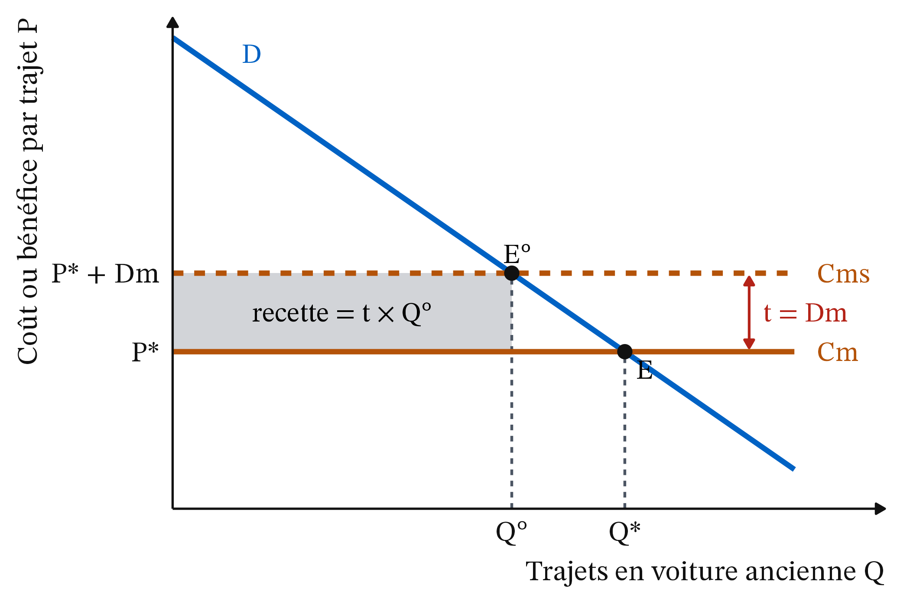
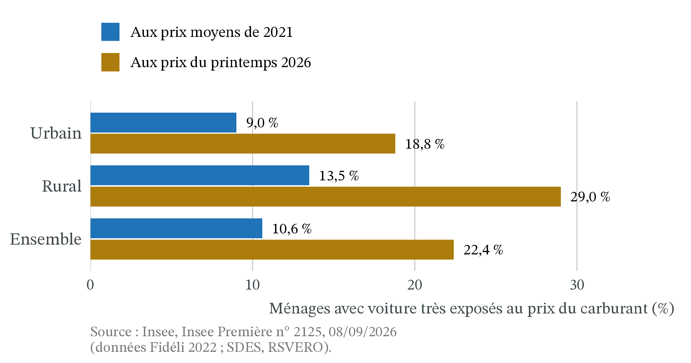

ZFE : qui doit payer la transition automobile ?
CM 5 · Partie I · Marchés, prix et régulations
Externalités, coût marginal social, norme, taxe ou subvention.
- Externalité : l’action d’un agent modifie le bien-être d’un autre sans compensation par le marché. Le riverain respire la pollution des voitures ; personne ne le paie.
- Coût marginal (Cm) : le coût d’une unité de plus. La courbe d’offre se lit comme une courbe de coût marginal.
- La demande comme bénéfice marginal : la hauteur de la demande D, pour une quantité donnée, mesure ce que vaut la dernière unité pour celui qui l’achète.
- Surplus et perte sèche : le surplus est l’écart entre ce qu’une unité vaut et ce qu’elle coûte ; la perte sèche est le surplus perdu quand on s’écarte de la meilleure quantité (CM 4).
- Incidence : celui qui verse un impôt n’est pas toujours celui qui le supporte (CM 2).
- Positif et normatif : l’analyse positive décrit ce qui est ; l’analyse normative dit ce qui devrait être, à partir d’un jugement de valeur.
1 La question
Le 8 octobre 2026, l’Assemblée nationale examine une proposition de loi visant à abroger les zones à faibles émissions (ZFE). Le débat s’arrête à minuit sans vote : le texte n’est pas adopté (LCP, 09/10/2026, lien ; dossier législatif : Assemblée nationale, proposition de loi n° 2970, lien). Quelques mois plus tôt, le 21 mai 2026, le Conseil constitutionnel avait censuré pour une raison de procédure l’article de loi qui supprimait les ZFE (décision n° 2026-903 DC). Une ZFE interdit aux voitures les plus polluantes, repérées par leur vignette Crit’Air, de circuler dans une agglomération. Au 1er janvier 2025, 25 agglomérations de l’Hexagone en avaient une (The Conversation, 11/06/2026). À Clermont-Ferrand, la restriction ne vise que les véhicules utilitaires, pas les voitures des particuliers (Insee Analyses n° 124, 27/08/2026).
Trois faits intriguent.
- Tous admettent que la pollution de l’air nuit à la santé, mais la mesure qui la combat divise.
- L’Insee estime que les ZFE ont bien fait baisser les émissions, mais beaucoup moins que la baisse totale observée (27/08/2026).
- Les ménages modestes, qui polluent peu au total, sont souvent ceux qui doivent changer de voiture.
La question de la séance : qui doit payer la transition automobile, le pollueur, le contribuable ou le riverain ? Pour y répondre, on construit trois outils : le coût marginal social, la comparaison entre taxe, norme et subvention, et la mesure de l’effet propre d’une politique. Cette séance est la première du programme du CC2.
Le statut juridique est arrêté au 21/10/2026 ; le raisonnement n’en dépend pas.

2 Apports théoriques
2.1 La pollution est un coût que le marché oublie
Vers 1920 · John Palmer Clarke, domaine public, Wikimedia Commons
Arthur Cecil Pigou (1920), The Economics of Welfare, Londres, Macmillan · école néoclassique (Cambridge). Quand une activité impose à d’autres un coût qu’elle ne paie pas, le coût privé de celui qui agit est inférieur au coût pour la société, et le marché produit trop. Une taxe égale au dommage causé par la dernière unité rapproche le coût privé du coût social.
Un automobiliste décide de prendre sa voiture en comparant ce que le trajet lui apporte à ce qu’il lui coûte : carburant, usure, temps. Il ne compte pas les oxydes d’azote et les particules fines que respirent les riverains. Pour la société, ce trajet coûte pourtant davantage.
Définition 1 (Dommage marginal) Le dommage marginal (Dm) est le coût que la dernière unité produite ou consommée impose aux autres, sans compensation : ici, le coût pour la santé des riverains d’un trajet de plus en voiture polluante.
Définition 3 (Optimum social) La quantité socialement optimale, notée Q°, est celle où le bénéfice marginal (la demande D) égale le coût marginal social. Le marché, lui, s’arrête en Q*, où la demande égale le coût marginal privé. Avec une externalité négative, Q* est supérieur à Q° : on roule trop.
L’optimum n’est pas « zéro pollution ». Un trajet qui vaut 20 € à son auteur et coûte 6 € à la société mérite d’être fait. Seuls sont de trop les trajets qui valent moins que ce qu’ils coûtent à tous.
2.2 La vraie question est « qui a le droit ? »
2003 · University of Chicago Law School, licence Attribution, Wikimedia Commons
Ronald Coase (1960), « The Problem of Social Cost », The Journal of Law and Economics, 3, p. 1-44 · école de Chicago, économie du droit. Le dommage est réciproque : protéger le riverain gêne l’automobiliste, et laisser rouler l’automobiliste gêne le riverain. Si les droits sont clairs et la négociation peu coûteuse, les parties trouvent entre elles la bonne quantité, quel que soit celui qui détient le droit ; ce droit décide seulement de qui paie l’autre.
Si les riverains ont droit à un air sain, les automobilistes paient pour polluer. Si les automobilistes ont le droit de rouler, ce sont les riverains, ou le contribuable, qui paient pour qu’ils roulent moins. Dans une grande agglomération, automobilistes et riverains se comptent par centaines de milliers : les coûts de transaction (se trouver, négocier, faire respecter l’accord) sont trop élevés. L’État tranche à leur place. Choisir un instrument, c’est donc aussi choisir qui détient le droit, et donc qui paie.
2.3 Fixer le prix ou fixer la quantité
2015 · European University Institute, CC BY-SA 2.0, recadré, Wikimedia Commons
Martin Weitzman (1974), « Prices vs. Quantities », The Review of Economic Studies, 41(4), p. 477-491 · économie publique. Le régulateur connaît mal ce que coûtera l’effort de dépollution : une taxe fixe le prix de la pollution mais laisse la quantité incertaine, une norme fixe la quantité mais laisse le coût incertain. Il vaut mieux fixer la quantité quand le dommage grimpe vite au-delà d’un seuil, plus vite que le coût de l’effort, et fixer le prix quand le dommage de chaque unité est à peu près le même.
Définition 4 (Taxe pigouvienne, norme, subvention) Trois instruments permettent d’approcher Q°.
- La taxe pigouvienne fait payer au pollueur une taxe unitaire t égale au dommage marginal à l’optimum : t = Dm.
- La norme fixe directement une quantité ou interdit une catégorie (ici, des vignettes Crit’Air).
- La subvention paie le pollueur pour qu’il pollue moins (prime à l’achat d’une voiture propre, aide à la location).
3 Les outils
3.1 Le marché roule trop parce que le conducteur ne paie pas tout le coût
Le conducteur s’arrête en Q* ; la société voudrait s’arrêter en Q°, où D coupe Cms. Entre les deux, chaque trajet rapporte à son auteur plus que Cm, mais moins que Cms : la somme de ces écarts est la perte sèche.
3.2 Taxe, norme ou subvention : même quantité, payeurs différents
Exemple 1 (Trois façons de réduire les trajets polluants) Dans une agglomération fictive, Q est le nombre de trajets quotidiens en voiture ancienne, en milliers, et P est en euros par trajet. Un trajet vaut à son auteur P = 12 − Q : le tout premier trajet vaut presque 12 €, le 8 000e seulement 4 €. Le coût privé d’un trajet est Cm = 4 € ; la pollution impose aux riverains Dm = 2 € par trajet.
- L’équilibre de marché. Le conducteur roule tant que le trajet vaut plus de 4 € : 12 − Q = 4, donc Q* = 8, soit 8 000 trajets.
- Le coût social. Cms = 4 + 2 = 6 € par trajet.
- L’optimum. 12 − Q = 6, donc Q° = 6, soit 6 000 trajets. Il y a 2 000 trajets de trop.
- La perte sèche. Le 6 001e trajet vaut 6 € et coûte 6 € à la société : il ne perd rien. Le 8 000e vaut 4 € et coûte 6 € : il perd 2 €. En moyenne, les 2 000 trajets de trop perdent 1 € chacun : perte sèche = ½ × 2 × 2 = 2 000 € par jour (le triangle de la Figure 2).
- La taxe. Avec t = Dm = 2 €, le trajet coûte 6 € au conducteur : il s’arrête de lui-même à 6 000 trajets. L’État perçoit 2 × 6 = 12 000 € par jour (le rectangle de la Figure 3). Les conducteurs paient cette taxe et perdent en plus 2 000 € de surplus sur les trajets abandonnés, qui valaient en moyenne 5 € pour un coût de 4 €. Les riverains gagnent 2 × 2 000 = 4 000 € de pollution en moins. Bilan pour la société : 4 000 − 2 000 = +2 000 €, exactement la perte sèche supprimée. Les 12 000 € de taxe ne sont pas perdus : ils passent des conducteurs à l’État, qui peut les rendre.
- La norme bien ciblée. La ville interdit les 2 000 trajets qui valent le moins (entre 4 et 6 €). On arrive aussi à 6 000 trajets et à +2 000 €. Mais l’État ne perçoit rien, et les conducteurs qui restent ne paient rien : seuls paient ceux qui sont écartés (2 000 €).
- La norme mal ciblée. Une ZFE n’interdit pas les trajets les moins utiles, elle interdit des vignettes. Supposons qu’elle écarte 2 000 trajets qui valent en moyenne 10 € à leurs auteurs, par exemple ceux de salariés sans transport en commun. Ils perdent chacun 10 − 4 = 6 €, soit 12 000 € par jour. La pollution évitée reste de 4 000 €. Bilan : 4 000 − 12 000 = −8 000 € : la norme fait plus de mal que de bien.
- La subvention. L’État paie 2 € par trajet évité. Rouler coûte alors 4 € plus les 2 € auxquels on renonce : on retombe à 6 000 trajets. Mais c’est le contribuable qui paie : 2 × 2 000 = 4 000 € par jour.

| Instrument | Trajets par jour | Qui paie ? | Budget public |
|---|---|---|---|
| Taxe t = 2 € | 6 000 | les conducteurs : 12 000 € de taxe et 2 000 € de surplus | +12 000 € |
| Norme bien ciblée | 6 000 | les conducteurs écartés : 2 000 € | 0 |
| Subvention de 2 € par trajet évité | 6 000 | les contribuables : 4 000 € | −4 000 € |
| Rien | 8 000 | les riverains : 2 × 8 000 = 16 000 € de pollution | 0 |
Dans les trois premières lignes, les riverains subissent encore 2 × 6 000 = 12 000 € de pollution par jour : l’optimum n’est pas zéro pollution.
Ce tableau résume la séance. La taxe applique le principe pollueur-payeur : elle fait payer aux pollueurs le dommage qu’ils causent encore (12 000 €, exactement le dommage restant, que l’État pourrait rendre aux riverains). La norme ne leur fait payer que l’effort de réduction (2 000 €) : les riverains gardent 12 000 € de pollution à leur charge. La subvention fait payer le contribuable. Ne rien faire laisse les riverains tout payer. C’est l’idée de Coase : le choix de l’instrument est d’abord un choix de répartition.
« La taxe coûte plus cher aux conducteurs, donc à la société. » C’est faux. Les 12 000 € de taxe sont un transfert vers l’État, qui peut les rendre, pas une perte. Pour la société, la taxe et la norme bien ciblée font le même gain (+2 000 € par jour) ; seul change qui paie.
3.3 Fixer le prix ou la quantité : tout dépend de l’erreur la plus grave

Exemple 2 (La ville ne sait pas à quel point les conducteurs tiennent à leur voiture) On reprend Cm = 4 € et Dm = 2 €. La ville ignore la demande : elle est basse (P = 11 − Q) ou haute (P = 13 − Q), avec une chance sur deux. En moyenne, P = 12 − Q, comme dans l’Exemple 1 : la ville vise 6 000 trajets. Ici, l’effort de dépollution consiste à renoncer à des trajets : ne pas connaître la demande, c’est ne pas savoir ce que coûtera cet effort.
- Avec une taxe de 2 €. Le trajet coûte 6 €. Demande basse : 11 − Q = 6, soit 5 000 trajets. Demande haute : 13 − Q = 6, soit 7 000 trajets. Le prix est connu, la quantité ne l’est pas.
- Avec une norme de 6 000 trajets. Sans elle, on ferait 11 − 4 = 7 000 ou 13 − 4 = 9 000 trajets : la norme s’applique dans les deux cas. Le dernier trajet permis vaut 11 − 6 = 5 € ou 13 − 6 = 7 €, soit 1 € ou 3 € de plus que son coût. C’est ce que la norme coûte au dernier conducteur : la quantité est connue, ce coût ne l’est pas.
- Si le dommage est le même pour chaque trajet (Dm = 2 € toujours), le vrai optimum est là où la demande coupe 6 € : 5 000 trajets si la demande est basse, 7 000 si elle est haute. La taxe tombe juste dans les deux cas ; la norme se trompe de 1 000 trajets à chaque fois. Chaque erreur coûte un petit triangle : ½ × 1 × 1 = 500 € de perte par jour, avec trop de trajets si la demande est basse, trop peu si elle est haute.
- Si le dommage grimpe vite au-delà de 6 000 trajets (par exemple si dépasser un seuil légal entraîne une sanction), dépasser coûte très cher. La norme, qui garantit 6 000, l’emporte : c’est le résultat de Weitzman.
Application. Pour le dioxyde d’azote (NO₂), le droit européen fixe des valeurs limites de concentration à ne pas dépasser, et la France a déjà été condamnée par la Cour de justice de l’Union européenne pour les avoir dépassées « de manière systématique et persistante » (The Conversation, 11/06/2026). Ce seuil est fixé par le droit : au-delà, la sanction rend le dépassement très coûteux : c’est l’argument de Weitzman pour un instrument qui garantit le résultat. Une ZFE n’en est qu’une approximation : elle interdit des vignettes sans plafonner les émissions. Pour le CO₂, le dommage dépend du stock mondial : celui d’une tonne de plus est à peu près constant, ce qui plaide pour un prix.
3.4 Mesurer l’effet propre d’une ZFE : comparer avec ce qui se serait passé sans elle
Définition 5 (Contrefactuel et effet propre) Le contrefactuel est ce qui se serait passé sans la politique. On ne l’observe jamais : on l’estime en suivant des territoires comparables qui ne l’ont pas appliquée. L’effet propre de la politique est l’écart entre ce qu’on observe et ce contrefactuel. C’est la méthode de l’évaluation de l’encadrement des loyers (CM 4), qui compare les communes encadrées à des communes semblables.
Exemple 3 (Deux différences pour isoler l’effet d’une ZFE) Chiffres fictifs. Dans les villes à ZFE, les émissions passent de 100 à 61 en cinq ans : −39 %. Dans des villes témoins comparables, sans ZFE, elles passent de 100 à 66 : −34 %.
- Première différence : l’avant-après dans chaque groupe. −39 % avec ZFE, −34 % sans : le parc se renouvelle partout.
- Seconde différence : l’écart entre les deux groupes. −39 − (−34) = −5 points. Les villes témoins servent de contrefactuel.
- L’effet propre de la ZFE est donc de 5 points, et non de 39 %.
Un point de pourcentage est l’écart entre deux pourcentages : passer de −34 % à −39 %, c’est 5 points de plus. Cette méthode s’appelle les doubles différences.
L’Insee applique cette méthode : il compare les neuf intercommunalités qui ont mis en place une ZFE pour les voitures jusqu’en 2023 (hors Grand Paris, trop différent) à 26 intercommunalités comparables sans ZFE, de trois ans avant à deux ans après (Insee Analyses n° 124, 27/08/2026). La Figure 5 porte sur six de ces neuf ZFE : celles de Nice, Grenoble et Toulouse, mises en place en 2023, n’y figurent pas.

Sur le parc, même logique : dans les intercommunalités à ZFE, les voitures Crit’Air 1 et électriques augmentent de 88,4 % en cinq ans, contre 82,6 % sans ZFE, soit 5,8 points d’effet propre ; les Crit’Air 3 baissent de 34,5 %, contre 30,0 %, soit 4,5 points (Insee, 27/08/2026).
![Graphique en barres horizontales pour cinq groupes de vignettes. Crit'Air 1 et électriques : plus 88,4 % observé, plus 82,6 % sans ZFE, effet plus 5,8 points. Crit'Air 2 : moins 4,3 % observé, plus 2,8 % sans ZFE, effet moins 7,1 points. Crit'Air 3 : moins 34,5 % observé, moins 30,0 % sans ZFE, effet moins 4,5 points. Crit'Air 4 : moins 53,6 % observé, moins 48,1 % sans ZFE, effet moins 5,5 points. Crit'Air 5 et non classées : moins 64,1 % observé, moins 62,0 % sans ZFE, effet non significatif. Pour chaque vignette sauf les Crit'Air 2, la barre bleue observée est proche de la barre grise du contrefactuel.](cm5_files/figure-html/fig-parc-zfe-1.png)
Pour chaque vignette sauf les Crit’Air 2, dont le parc baisse alors qu’il aurait augmenté sans ZFE, la barre bleue est proche de la barre grise : l’essentiel du verdissement du parc se serait produit sans ZFE. Pour les Crit’Air 5 et non classées, la baisse observée (−64,1 %) reste dans l’intervalle de confiance du contrefactuel : on ne peut pas dire que la ZFE y soit pour quelque chose.
« Les émissions d’oxydes d’azote ont baissé de 38,9 % grâce aux ZFE. » C’est faux. Elles auraient baissé de 34,3 % sans ZFE, parce que le parc se renouvelle de toute façon. La ZFE n’explique que 4,6 points sur 38,9. À l’inverse, « la ZFE ne sert à rien » est faux aussi : l’effet est petit, mais il est mesuré et différent de zéro. Comparer un avant et un après ne suffit jamais : il faut un contrefactuel.
Pourquoi un effet si modeste ? L’outil de l’Exemple 1 éclaire trois résultats de l’Insee (27/08/2026).
- La norme vise la vignette, pas le kilomètre. Deux ans après, les voitures des résidents ne roulent pas significativement moins, et les trajets domicile-travail en voiture ne baissent pas. La ZFE change quelle voiture on conduit, pas combien on roule. Une taxe par kilomètre pollué jouerait sur les deux.
- Elle frappe des voitures qui partaient déjà. Les Crit’Air 5 et non classées baissent de 64,1 %, mais l’effet de la ZFE n’est pas significatif : elles ne pesaient qu’environ 6 % du parc des ZFE trois ans avant leur mise en place (223 400 voitures sur 3,6 millions), et moins de 5 % à leur mise en place.
- Elle est peu contrôlée. Environ 12 600 contraventions liées aux ZFE en 2019 et 2 300 en 2024, sur plus de 24 millions de contraventions routières par an. Les ménages réagissent pourtant dès l’annonce de 2019 : la norme agit surtout par les anticipations, à l’achat d’une occasion.
4 Effets de répartition
4.1 Les ménages modestes changent de voiture, alors qu’ils polluent peu au total
Par revenu. L’effet de la ZFE est « plus marqué dans les communes à revenu intermédiaire ou modeste », où les voitures sont plus anciennes et donc plus souvent interdites (Insee, 27/08/2026). Sur huit villes étudiées, une ZFE visant les Crit’Air 3 à 5 ferait perdre à certaines catégories plus de 20 % des emplois accessibles dans quatre d’entre elles ; employés et ouvriers sont les plus touchés dans six villes sur huit (C. Liotta, The Conversation, 27/11/2024, mis à jour le 28/03/2025). Pourtant, en Île-de-France, les déplacements des 20 % les plus pauvres ne représentent que 9 % de la pollution automobile (A. Poulhès, The Conversation, 23/06/2025). C’est l’étape 7 de l’Exemple 1 : la norme demande l’effort selon l’âge de la voiture, pas selon la pollution émise.
Les gains de santé vont aux habitants de la zone : surtout aux plus riches à Paris, l’inverse à Bruxelles, selon Liotta ; « également répartis » en région parisienne, selon une étude citée par Poulhès. La question reste ouverte.
4.2 Le centre respire, des territoires éloignés héritent des vieilles voitures
Par territoire. Les voitures polluantes ne disparaissent pas toutes : une partie est revendue d’occasion dans des territoires sans restriction, et non voisins de la zone : dans les communes proches, le parc verdit comme ailleurs (Insee, 27/08/2026). Une taxe sur le carburant ou au kilomètre frapperait d’autres ménages que la ZFE : en 2021, 13,5 % des ménages avec voiture des intercommunalités rurales consacrent plus d’un mois de revenu par an au carburant, contre 9,0 % dans les intercommunalités urbaines (Insee Première n° 2125, 08/09/2026). Changer d’instrument, c’est changer de perdants.

Quand le prix du carburant monte, la part des ménages très exposés double à peu près partout. L’écart entre rural et urbain passe de 4,5 à 10,2 points, mais le rapport entre les deux parts reste voisin de 1,5 : l’Insee parle d’un « léger creusement » de l’écart (Insee Première n° 2125, 08/09/2026). Une taxe sur le carburant pèserait donc plus souvent sur les ménages ruraux, en proportion ; en nombre, les ménages très exposés restent plus nombreux dans les intercommunalités urbaines (Insee Première n° 2125, tableau complémentaire 3).
Par génération. Parmi les ménages très exposés au prix du carburant, 77,9 % ont au moins un membre en emploi, contre 70,9 % pour l’ensemble des ménages motorisés ; les ménages sans emploi de 65 ans ou plus (personne de référence) n’en représentent que 10,2 %, contre 24,3 % (Insee Première n° 2125, données 2021). Une taxe sur le carburant pèserait donc surtout sur les actifs qui roulent loin pour travailler.
La chaîne de causalité d’une ZFE résume pourquoi ses coûts et ses bénéfices ne tombent pas sur les mêmes ménages (tableau 1).
| Étape | Ce qui se passe | Qui est concerné |
|---|---|---|
| 1. La règle | Les vignettes les plus anciennes sont interdites dans la zone | Les propriétaires de voitures anciennes |
| 2. La réaction | Changer de voiture, la revendre ailleurs, ou renoncer à entrer | Surtout les ménages modestes et à revenu intermédiaire |
| 3. Le parc | Moins de voitures polluantes dans la zone, mais certaines sont revendues hors zone | Des territoires sans restriction, non voisins de la zone |
| 4. L’air | Moins d’émissions locales, baisse supérieure au tendanciel de quelques points seulement | Les habitants de la zone |
4.3 Qui paie l’accompagnement ?
En 2025, le leasing social propose 50 000 aides pour louer une voiture électrique à bas prix, jusqu’à 5 700 € pour les ménages très modestes. Au 30 décembre, environ 49 600 aides sont utilisées ; l’enveloppe de 350 millions d’euros est financée par les certificats d’économies d’énergie (CEE), et non par l’impôt (L’Info durable, 30/12/2025, d’après le ministère de la Transition écologique). Les CEE sont une obligation imposée aux vendeurs d’énergie, carburants compris, qui peuvent en répercuter le coût sur leurs prix : l’aide risque donc d’être payée en partie par tous les consommateurs d’énergie, automobilistes compris (incidence). Pour ses bénéficiaires, c’est une subvention. Le parc verdit fortement même sans ZFE : une partie des aides risque donc de financer des achats qui auraient eu lieu de toute façon. C’est un effet d’aubaine. Les chiffres de l’Insee ne permettent pas de le mesurer : leur contrefactuel est « sans ZFE », pas « sans aide », et les intercommunalités témoins reçoivent elles aussi les aides nationales.
5 La controverse
5.1 Faut-il garder les ZFE, et qui doit payer leur coût ?
Analyse positive (ce qui est : mécanismes et effets, vérifiables).
- La pollution automobile est une externalité : sans intervention, on roule plus que l’optimum.
- Les ZFE réduisent les émissions, mais leur effet propre est modeste : 4,6 points sur une baisse de 38,9 % pour les oxydes d’azote (Insee, 27/08/2026).
- Une norme par vignette ne rapporte rien et ne cible ni les trajets les moins utiles ni les kilomètres, mais l’âge de la voiture (Insee, 27/08/2026) ; une taxe rapporte une recette qui peut compenser les perdants.
- Le coût d’adaptation pèse davantage sur les ménages modestes qui ont une vieille voiture et travaillent loin des transports en commun.
Analyse normative (ce qui devrait être : dépend de jugements de valeur).
- Qui détient le droit ? Si l’on juge que les riverains ont droit à un air sain, le pollueur doit payer (taxe, ou au moins norme). Si l’on juge que l’accès en voiture au centre est un droit, la société doit payer (subvention). C’est la question de Coase, et l’économie ne la tranche pas.
- Efficacité ou équité ? Quand le dommage est à peu près constant, la taxe atteint l’optimum au moindre coût ; mais elle frappe les ménages captifs de la voiture ; on peut la compenser, si l’on sait les identifier.
- Quel poids donner à la santé des riverains par rapport à l’accès à l’emploi des périurbains ?
Les positions en présence. Pour les partisans de la suppression, la mesure est injuste : elle pèse surtout sur les ménages qui ne peuvent pas changer de voiture (France 24, 29/05/2025), pour un effet propre sur les émissions de quelques points seulement (Insee, 27/08/2026) ; l’exposé des motifs de la proposition de loi n° 2970 y voit « une atteinte à notre pacte républicain de liberté, d’égalité et de fraternité » (Assemblée nationale, 23/06/2026, lien). Pour Liotta, les ZFE actuelles réduisent l’accès à l’emploi des plus modestes ; elle propose de les accompagner pour les rendre plus égalitaires (The Conversation, 27/11/2024). Pour Poulhès, les ZFE sont bien inégalitaires, mais l’argument social ne justifie pas de les supprimer : les plus pauvres polluent peu et vont peu au centre, et ces chiffres « soulèvent donc plutôt des enjeux d’aménagement du territoire et de conditions de logement dans les centres » (The Conversation, 23/06/2025).
Les écoles. Pour Pigou, l’État corrige l’externalité par un prix, la taxe. Coase objecte que l’intervention a elle-même un coût. Pour Weitzman, ni la taxe ni la norme ne sont meilleures en soi : tout dépend de l’erreur la plus grave.
État au 21 octobre 2026. Le 21 mai 2026, le Conseil constitutionnel a censuré l’article 37 de la loi de simplification de la vie économique, qui supprimait les ZFE, parce qu’il avait été ajouté au projet sans lien, « même indirect », avec son contenu initial (article 45 de la Constitution) ; il ne s’est pas prononcé sur le fond, notamment sur la Charte de l’environnement (décision n° 2026-903 DC). Les ZFE restent donc en vigueur.
6 À retenir
- Avec une externalité négative, Cms = Cm + Dm dépasse le coût privé : le marché produit trop, d’où une perte sèche.
- Une taxe égale au dommage marginal (Pigou) amène le marché à l’optimum Q° ; sa recette est un transfert, pas une perte.
- Taxe, norme et subvention peuvent viser la même quantité ; elles diffèrent par le payeur : le pollueur, le pollueur écarté ou le contribuable (Coase).
- Quand le dommage grimpe vite au-delà d’un seuil, plus vite que le coût de l’effort, mieux vaut fixer la quantité (une norme) ; quand il est à peu près constant, mieux vaut fixer le prix (Weitzman).
- L’effet propre d’une politique se mesure contre un contrefactuel : les ZFE expliquent 4,6 points d’une baisse de 38,9 % des oxydes d’azote (Insee, 2026).
- Qui doit payer relève d’un jugement ; l’analyse dit qui paie avec chaque instrument.
7 Pour aller plus loin
Citéco (Cité de l’Économie) · « T’as Capté ? Épisode 10 : Les externalités » · 3 min 28
France 24 · « Suppression des ZFE : une mesure jugée injuste mais vertueuse pour la santé » · 4 min 57 · 29/05/2025 : le statut juridique a changé depuis, les arguments des deux camps restent
Articles
- The Conversation, C. Liotta, « Les zones à faibles émissions sont-elles inéquitables ? », 27/11/2024, mis à jour le 28/03/2025. Lien
- The Conversation, A. Poulhès, « Faut-il supprimer les zones à faibles émissions au nom de la justice sociale ? », 23/06/2025. Lien
- The Conversation, S. Martin et É. Annamayer, « ZFE, de la suppression au sursis : une saga juridique qui n’a pas encore dit son dernier mot », 11/06/2026. Lien
- L’Info durable, « Voitures électriques : à quelques heures de la fin 2025, le leasing social n’a pas fait le plein », 30/12/2025. Lien
Sources institutionnelles
- Insee, J. Garson, C. Malgouyres, M. Tô, C. Trevien, « Les ZFE renforcent le verdissement du parc automobile et contribuent au recul de ses émissions polluantes », Insee Analyses n° 124, 27/08/2026. Lien
- Insee, « L’impact des zones à faibles émissions sur le parc automobile en France », Documents de travail n° 2026-12, 27/08/2026 (version détaillée). Lien
- Insee, E. Lenzi, K. Masson, V. Mora, « Les dépenses de carburant pèsent davantage sur le budget des ménages ruraux », Insee Première n° 2125, 08/09/2026. Lien
- Conseil constitutionnel, décision n° 2026-903 DC du 21 mai 2026, Loi de simplification de la vie économique. Lien